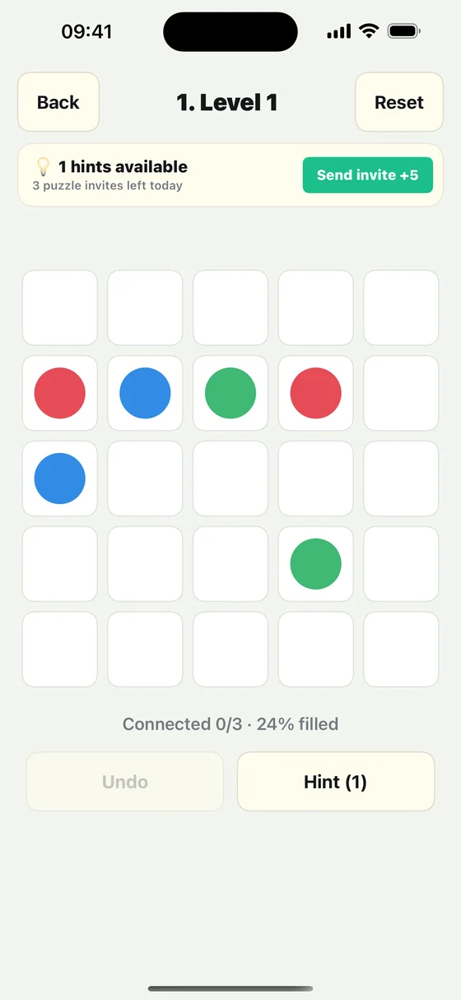
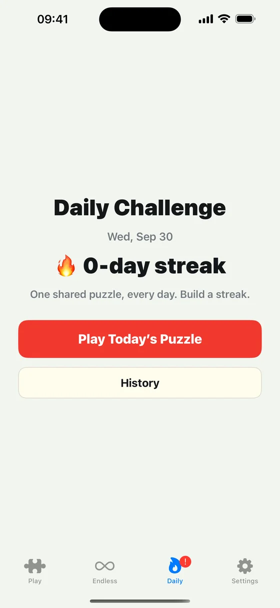

Connect matching colors
Trace a path between each pair. Keep paths from crossing and leave room for the other colors.
iPhone & iPad · iOS 17 or later
Link matching colors without crossing lines, then fill the board for a Perfect result. Play 999 levels or take on the daily puzzle.
Offline play · No ads · Optional one-time Pro unlock

Start with a small grid and work up to larger boards at your own pace.
Trace a path between each pair. Keep paths from crossing and leave room for the other colors.
A Perfect result uses every cell. Grids range from 5 × 5 to 12 × 12.
Take on the same daily puzzle as everyone else, use a hint when stuck, or play a level away from the internet.
Open Daily Challenge for a fresh board. Finish it to build a streak and review previous results in History.

Connect each matching pair and fill every square. You can rearrange paths if the connections leave unused cells.
Yes. Regular play has no timer, and the app supports offline play.
It’s an optional one-time purchase. Knots does not run ads.